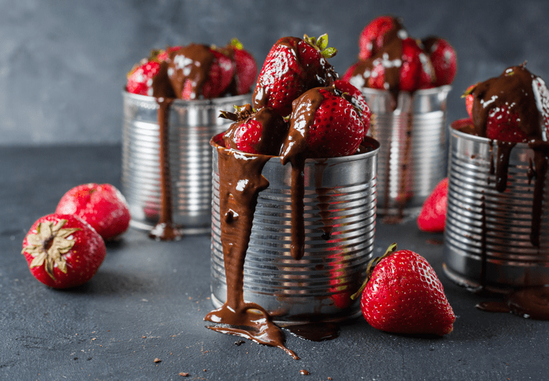

Chocolate Syrup
– raw / vegan / gluten-free / nut-free –
Do you remember Hershey’s Chocolate Syrup? I can recall that we always had a bottle of that tucked in our refrigerator door while I was growing up.

I won’t even skip the fact that I owned a few bottles throughout my adulthood too. Hehe But, gosh, it’s been 15? 20 years? Since I last purchased any. Boy, does that make me feel old? :) Some of you were perhaps born on the last day I enjoyed the stuff. haha
Ole well, that is life. :) I am not comparing this chocolate sauce to the taste of Hershey’s, but it’s gooey, luscious, smooth, and rich with chocolate flavor! It can quickly take the simplest dessert to a tasty new level of the divine.
One thing that Hershey’s is proud of when it comes to their syrup is that it is fat-free… mine isn’t. BUT mine doesn’t contain; HIGH FRUCTOSE CORN SYRUP; CORN SYRUP; WATER; COCOA*; SUGAR; CONTAINS 2% OR LESS OF: POTASSIUM SORBATE (PRESERVATIVE); SALT; MONO- AND DIGLYCERIDES*; XANTHAN GUM; POLYSORBATE 60; VANILLIN, ARTIFICIAL FLAVOR … and for that, I am proud.
 Ingredients:
Ingredients:
Yields 2 cups
Preparation:
- Blend the sweetener, coconut oil, and cacao powder in a high-speed blender until smooth.
- All ingredients must be at room temperature and melted coconut oil so that everything can be mixed well.
- Pour into a squeeze container for ease of use.
- Place in the fridge to allow to set and thicken a little.
- If the sauce thickens up too much, simply place the closed bottle into a bowl of hot water until it melts. Keep an eye on it because it can go from too thick to too thin.
- It will last up to a month in the fridge.
© AmieSue.com